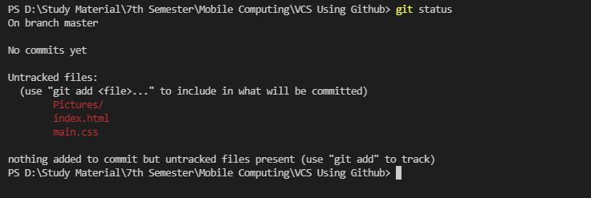

Open directory in terminal and and initialize the empty git repository on local machine using commad git init
This command will tell you about files which are modifed,updated or deleted
The command git add File-Name (which add particular file to stage area ) or git add . (which add all files of directory to staging area)
Once the files are in staging area, you can save them to commit history usnig coomand git commit -m Message
Once the commits have be saved we can send this changes to GitHub.In order to do that we first have to link over local repository which we created using git init and that repository which we created on GitHub, using command git remote add origin URL
Once the coonection between local repository and online repository has been established, we can push our changes to online or central repository so that data remain synchronous by using command git push -u origin Branch-name

After git push commnad you can see all the changes have be saved in central repository and it also show the no. of commits have been made so far.
This commnad is used to pull the changes made in remote repository to local repository
Consider if our local repository is synchronized with central repository but we we made changes at central repository as well as on local repository and try to push our loacl changes to online repository we will shown an error message like remote contain work that you donot contain locally so we have to pull the changes from remote to loacl first using command git pull and then push it back after selecting changes we want to retain in case of same line changes in central and local repository using command git push -u origin Branch-Name